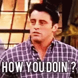
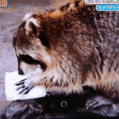

Acerca de
Inspirado en Joey y un mapache, hice How you doin world pensando, al mismo tiempo, en un hello world canchero y en un lugar para saber cómo le está yendo al mundo.*
En general, antes de invertir un poco más, reviso cómo le está yendo al mercado en la mañana y cuál debería ser el efecto esperado en el valor cuota. La idea es, al menos, intentar comprar en días en que la cosa baje un poco... Pero esa ventana de tiempo dura lo mismo que el terrón del mapache.
* Acotado al mundo bursátil extranjero desde nuestra perspectiva local.